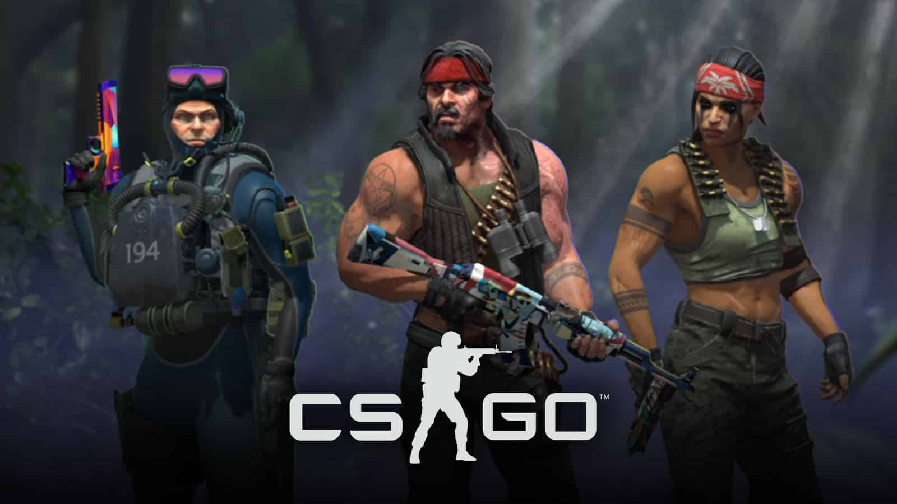
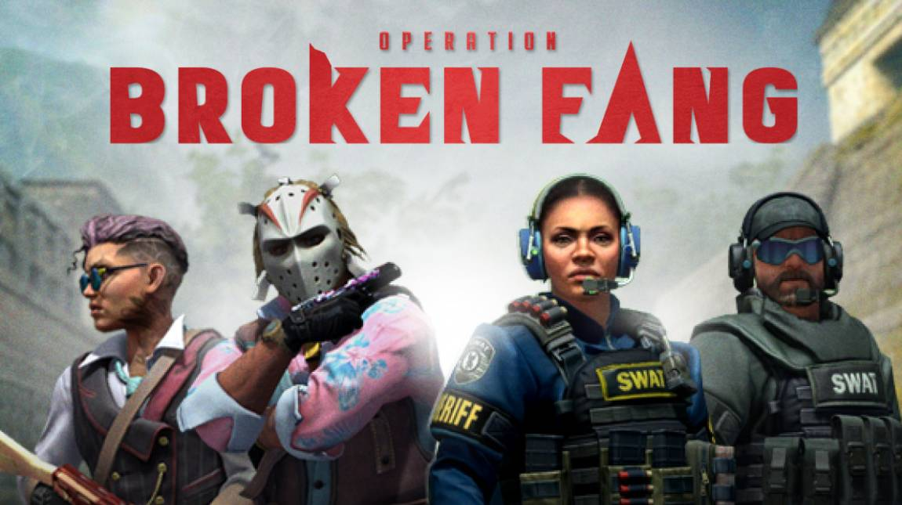
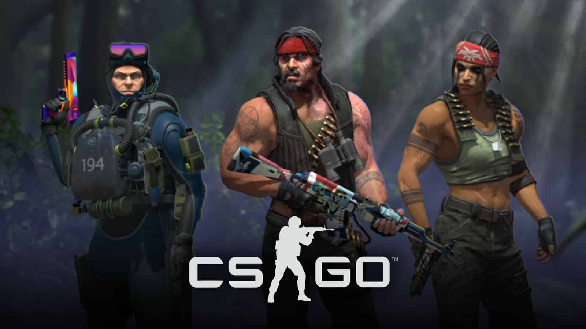
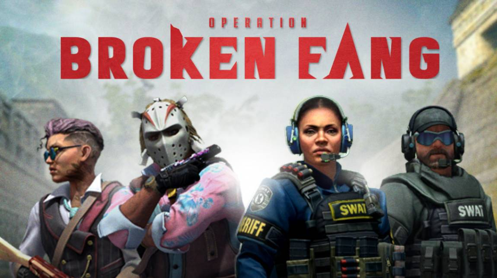

Counter-Strike
 A Counter-Strikeot eredetileg 1999-ben Minh Gooseman készítette Jess Cliffe segítségével egy Half-Life modnak. A készítő Gooseman a Quake enginnel már dolgozott,
de most valami új dolgot akart kipróbálni és a A valve által készített GoldSrc mellett döntött. Körülbelül egy hónap alatt csinláta meg a programozás részét,
majd a karaktermodelleket. A játék fegyverei elkészítésében a katonai fegyverek által érdeklődése segített, valamint a Ranbow Six és a Spec Ops is inspirálta
A pályák elkészítésében Cliffe barátja segített neki,aki a játék közösségévelfoglalkozott és kapcsolatot tartott a közösség pályakészítő részével akik pályái
végül bekerültek a játékba. A 2000-es év elején a Valve vette meg a játékot, majd adta ki. Ez Volt az első játék a Counter-Strike szériából.
A Counter-Strikeot eredetileg 1999-ben Minh Gooseman készítette Jess Cliffe segítségével egy Half-Life modnak. A készítő Gooseman a Quake enginnel már dolgozott,
de most valami új dolgot akart kipróbálni és a A valve által készített GoldSrc mellett döntött. Körülbelül egy hónap alatt csinláta meg a programozás részét,
majd a karaktermodelleket. A játék fegyverei elkészítésében a katonai fegyverek által érdeklődése segített, valamint a Ranbow Six és a Spec Ops is inspirálta
A pályák elkészítésében Cliffe barátja segített neki,aki a játék közösségévelfoglalkozott és kapcsolatot tartott a közösség pályakészítő részével akik pályái
végül bekerültek a játékba. A 2000-es év elején a Valve vette meg a játékot, majd adta ki. Ez Volt az első játék a Counter-Strike szériából.
Condition Zero
A Counter-Strikeot 2004 márciusában a Condition Zero követte. A Turtle Rock Studios és a Valve készítette, ezt is GoldSrc-ben. Ez az egyetlen Counter-Strike játék ami a multiplayeren kívül tartalmaz singleplayer kampányt is. A Tour of Duty-t és Deletet Scenes-t. Az előző verzióhoz képest jobb karaktermodellekkel, textúrákkal, pályákkal és grafikával fejlesztették. Esport szinten sosem volt olyan nagy mint előde, de a story mode nagyot dobott rajta. A játék máig megkapható steamen. Itt
Source
A Counter-Strike: Source először egy Counter-Strike remakenek indult. A Valve készítette a és adta ki a beta verzíót először 2004 augusztusában.
 Source engineben írodott, a nevét is erről kapta. A játékmenet viszont nagyban változott.A terrorista, terrorelhárító csapatok maradtak és Ugyanúgy
FPS csapatjáték mint az előző, de a mára már klasszikussá vált bomba védó/hatástalanító, valamint a túsz megmentő/rabló módot ebben a
játékban láthattuk először. Ezzel és az összes grafikus változással együtt az emberek imádták, vannak akik a mai
napig játszanak vele. Bár esport szinten sokan nem szertték, ez a játék rakta le a CSGO alapjait és Steamen is
megtalálható Itt.
Source engineben írodott, a nevét is erről kapta. A játékmenet viszont nagyban változott.A terrorista, terrorelhárító csapatok maradtak és Ugyanúgy
FPS csapatjáték mint az előző, de a mára már klasszikussá vált bomba védó/hatástalanító, valamint a túsz megmentő/rabló módot ebben a
játékban láthattuk először. Ezzel és az összes grafikus változással együtt az emberek imádták, vannak akik a mai
napig játszanak vele. Bár esport szinten sokan nem szertték, ez a játék rakta le a CSGO alapjait és Steamen is
megtalálható Itt.
Counter-Strike: Global Offensive
A negyedik játékot a Counter-Strike szériából 2012-ben adták ki. Mint előde ez is a Source enginen fut. A játékot Windowson, Linuxon és Xboxon is lehet játszani. Maga a játékmenet nagyon hasonló a Sourcehoz, viszont a nagy grafikai változások és az új pályák mégis egy teljesen új játékká teszik. Ez a játék volt az, ami először popularizálta a steamet, és máig az egyik legjátszotabb játék ott. hónaponként körülbelül 11 millió játékossal gazdagodott fénykorában, és ez még nem minden. Bugok nélküli gameplayel, magas skill-ceilinggel tökéletesnek bizonyult a competitív játékra. 2013 óta a világon az egyik legnagyobb esport community-vel rendelkezik, még mindig tartanak több millió dolláros főnyereményű versenyeket.
Mostmár ingyenes
2018 decemberében ingyenessé vált, valamint egy battle royale játékmód is bekerült. Akik ezelőtt megvette ugynevezett 'prime'-ot kapott, hogy más primeosokkal
 tudjanak játszani, valamint fegyver skineket tudjanak venni. Primot egyébként lehet szerezni körülbelül 1 hónapnyi játék után ingyen is ha eléred a 21-es szintet.
2019-ben kijött az "Operation Shattered Web", amivel együtt egy battle pass rendszer is. 2020-ban az Operation Broken Fang-al kaptunk egy cinematic trailert, ami
az első volt 8 év után. 2021 Szeptemberében kiadták az Operation Riptide-ot, ami játék és matchmaking változásokat hozott, valamint új pályákat.


tudjanak játszani, valamint fegyver skineket tudjanak venni. Primot egyébként lehet szerezni körülbelül 1 hónapnyi játék után ingyen is ha eléred a 21-es szintet.
2019-ben kijött az "Operation Shattered Web", amivel együtt egy battle pass rendszer is. 2020-ban az Operation Broken Fang-al kaptunk egy cinematic trailert, ami
az első volt 8 év után. 2021 Szeptemberében kiadták az Operation Riptide-ot, ami játék és matchmaking változásokat hozott, valamint új pályákat.

